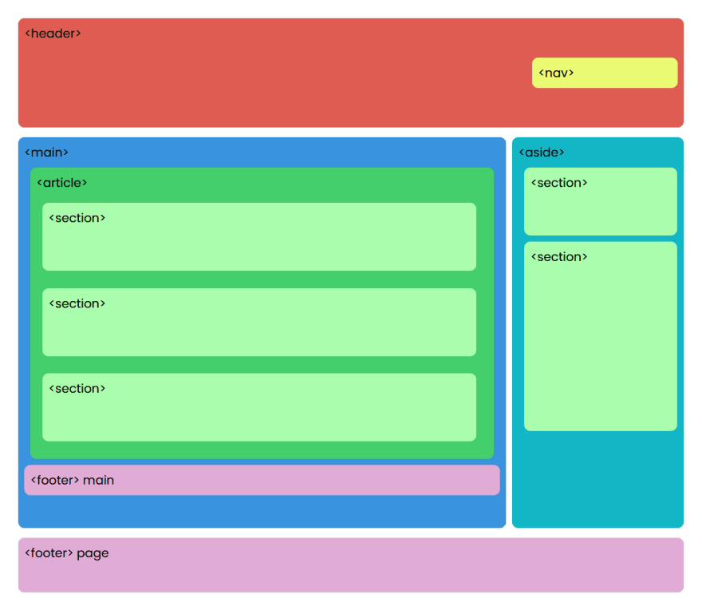

APRENDAMOS HTML5 Y CSS
Inicio
Temas
Etiquetas-Semanticas
CSS-grid
Recursos Digitales
Recurso 1
Recurso 2
Aprendizaje
Opcion 1
Opcion 2
Autor
Recurso Digital Etiquetas Semanticas

 APRENDAMOS HTML5 Y CSS
APRENDAMOS HTML5 Y CSS